GenRF: Generative Registration-free Image Fusion
Paper under review
Misaligned, degraded, partially overlapping captures go in — a high-quality, coherent fused image comes out.
No registration step. No restoration stage.
Fusion as conditional generation
Multi-modal image fusion combines complementary observations to improve scene visibility and perception. In real-world acquisition, differences in sensing principles and configurations introduce geometric discrepancies, while degradations further compromise source quality. Existing methods typically rely on explicit registration, yet large parallax complicates correspondence estimation, while mismatched fields of view leave some regions without cross-modal counterparts. Meanwhile, independent restoration underuses cross-modal information, whereas restoration–fusion methods assuming alignment remain vulnerable to misregistration.
This study revisits misaligned and degraded image fusion in the era of generative foundation models, in which cross-attention enables position-agnostic complementary information aggregation, while generative priors support degradation recovery and inference in missing regions. Building on this perspective, we propose GenRF, which adapts pretrained FLUX through LoRA to jointly enhance degraded observations, infer missing cross-modal context, and fuse complementary information without explicitly estimating deformation fields. Experiments on real-world infrared and visible captures show that GenRF delivers high-quality fusion directly from unregistered, degraded images without preprocessing, while improving downstream task performance under misalignment. Additional experiments show that GenRF generalizes to misaligned multi-exposure and multi-focus fusion without task-specific fine-tuning.
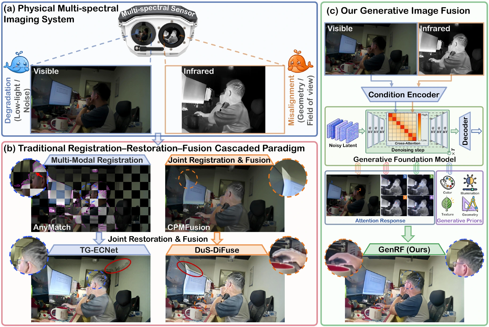
Generative image fusion
Fusion is cast as conditional generation. Given misaligned infrared and visible observations that may also be degraded and cover only partially overlapping fields of view, GenRF predicts a fused image in the visible reference geometry: cross-attention aggregates complementary context across misaligned positions, while generative priors recover degraded content and infer missing cross-modal context. No deformation field is estimated and no separate restoration stage is applied.
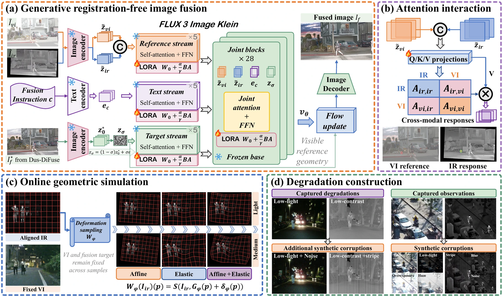
-
A generative reformulation.
We revisit misaligned and degraded multi-modal image fusion under a generative paradigm, where cross-attention retrieves complementary information beyond pixelwise correspondence and generative priors support degradation recovery and missing-content inference.
-
A registration-free framework.
We propose GenRF, a generative registration-free framework that adapts pretrained FLUX via LoRA to directly fuse real-world captures without separate registration or restoration. Geometric perturbations help cross-attention adapt to misalignment, while degradation modeling harnesses pretrained generative priors for restoration.
-
Broad evidence and generality.
Extensive experiments on real captures and four public benchmarks demonstrate superior fusion quality, geometric consistency, and degradation suppression, with benefits for downstream perception. Extended results on misaligned multi-exposure and multi-focus fusion without fine-tuning confirm the generalizability of GenRF.
Wipe comparison on the captured pairs
Ten infrared–visible, three multi-exposure and three multi-focus pairs, all used as captured: no registration, no restoration. Drag the handle; the left layer defaults to the reference frame that fixes the output geometry, the right one the GenRF output.
Night highway. The thermal camera sits beside the visible one, so the same cars land at different positions and the near edge falls outside its field of view. The result keeps the visible geometry and adds the thermal signature of the traffic ahead.
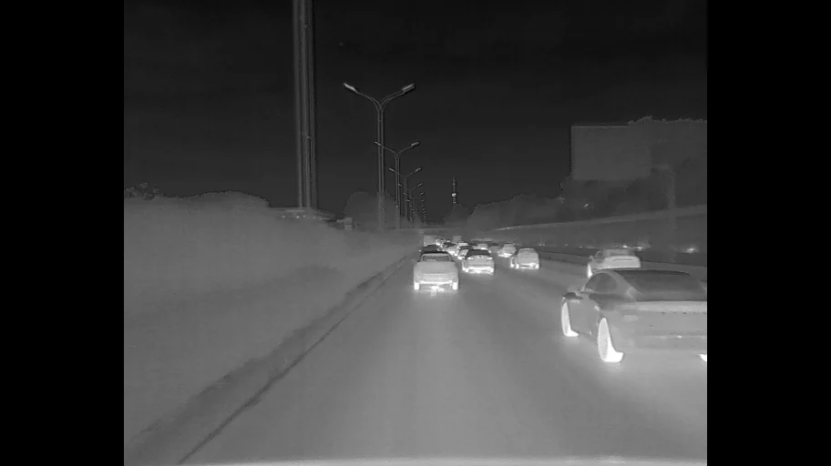
Night street. The minibus is almost black in the visible frame and saturated in the infrared one. The result keeps the body panels, the rear signage and the plate number readable.
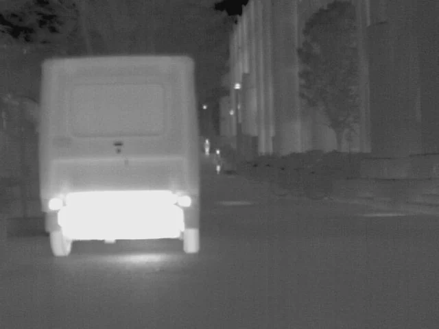
Night crossing. The pedestrian stepping across the road is a dark shape under the bare branches. The result keeps the street lighting and the branches while lifting the walker out.
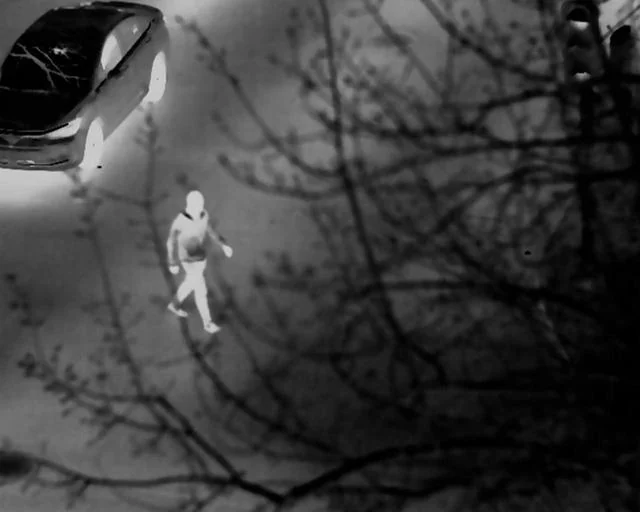
Night plaza. The visitor reading the poster barely registers in the colour frame. The result keeps the poster layout and the paving around it.
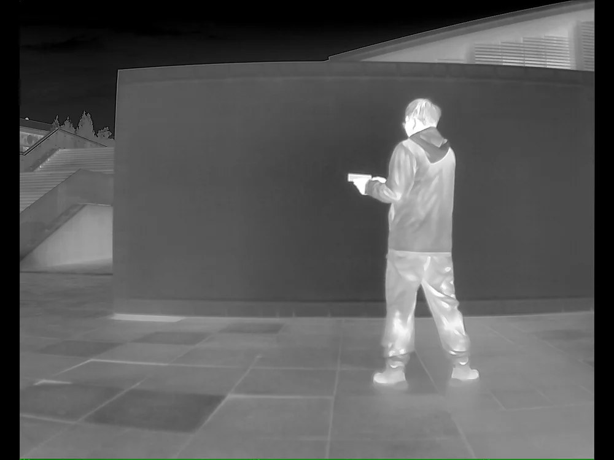
Night plaza. The figure at the foot of the stairs is a silhouette in the colour frame. The result keeps the handrail, the screen and the paving readable around it.
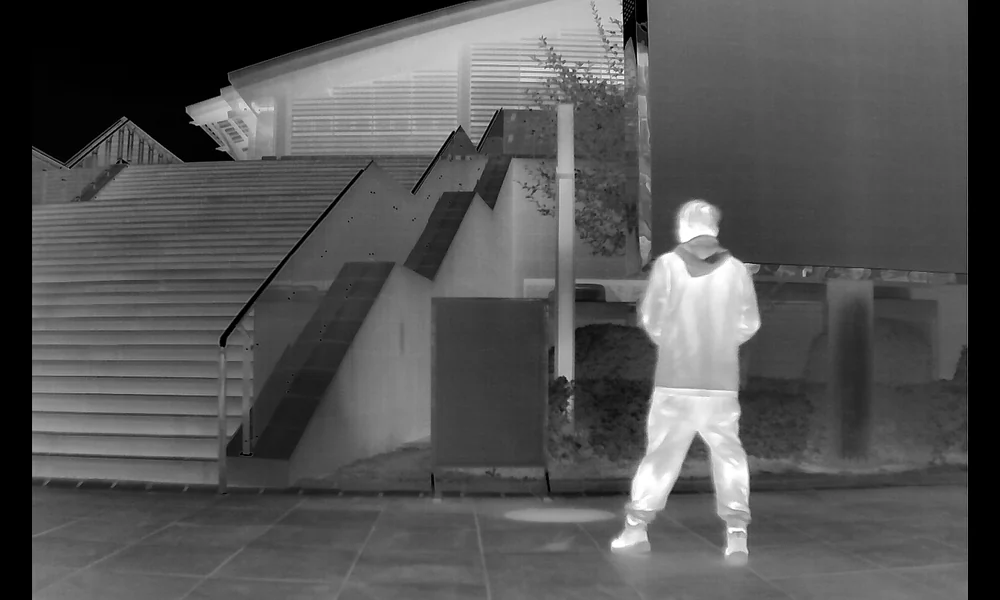
Top-down view of a stone plaque. The person crouching over the inscription is a dark shape in the colour frame. The result keeps the engraved text and the paving.
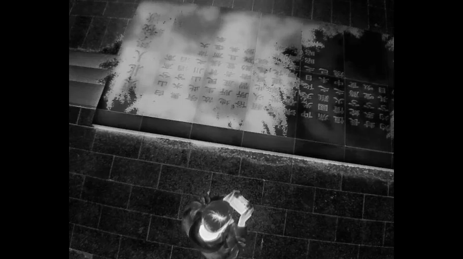
Brick courtyard seen from above. The walker is a dark shape on the brick paving. The result keeps the brick colour and the parked scooters.
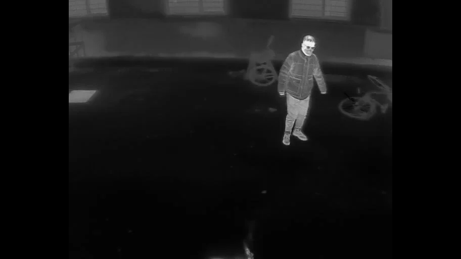
Tree-lined path, daylight. Two walkers in dark clothing sit against the foliage. The result keeps the greens and separates them.
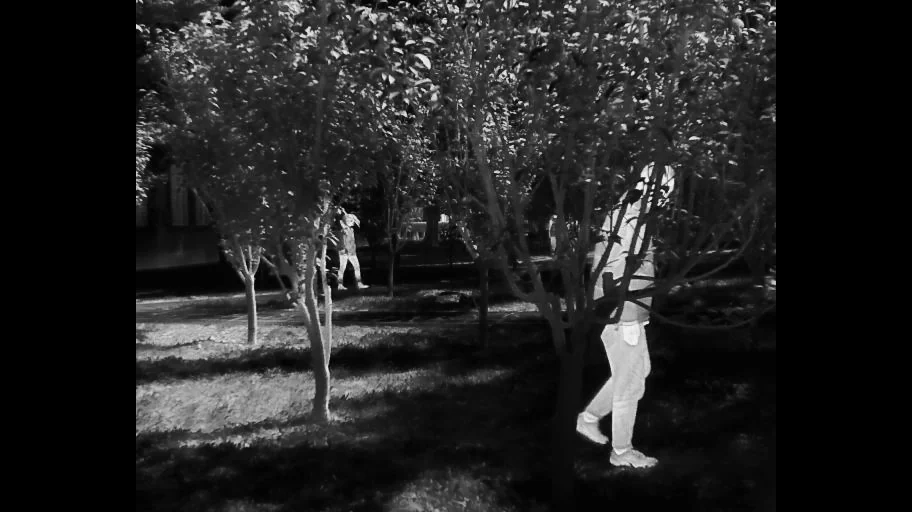
Courtyard, overcast. The figure is already visible, but the face and hands are not. The result keeps the paving and the windows and carries the thermal evidence into daylight.
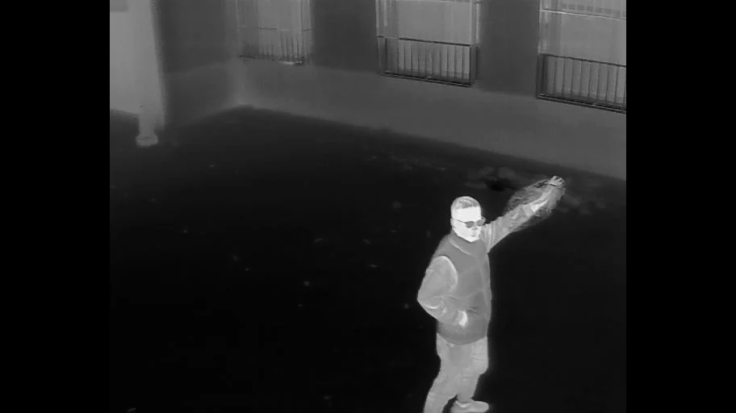
Aerial view. The two cameras ride a moving gimbal, so the frames differ in scale as well as in offset and the thermal frame is cropped. The result keeps the visible framing and cuts the haze, so the carriageway, the planting beds and the rooftops stay legible.
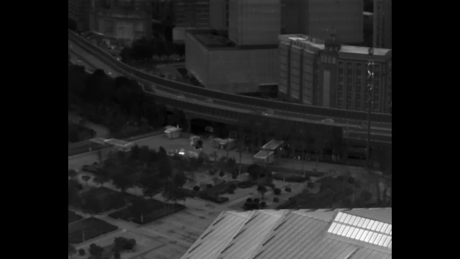
Riverside skyline. The bright frame holds the towers but clips the sky, the dark one keeps the water and loses the facade. The result brings both into a single exposure.
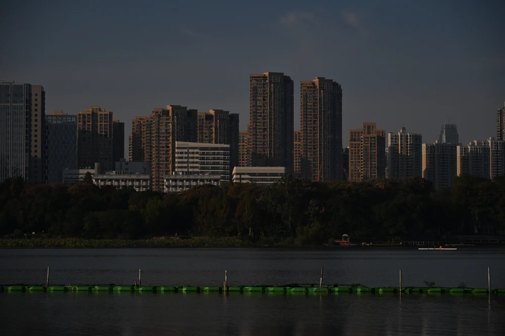
Brick facade. The two exposures are also offset by hand motion. The result keeps the brick colour of the dark frame and the window structure of the bright one.
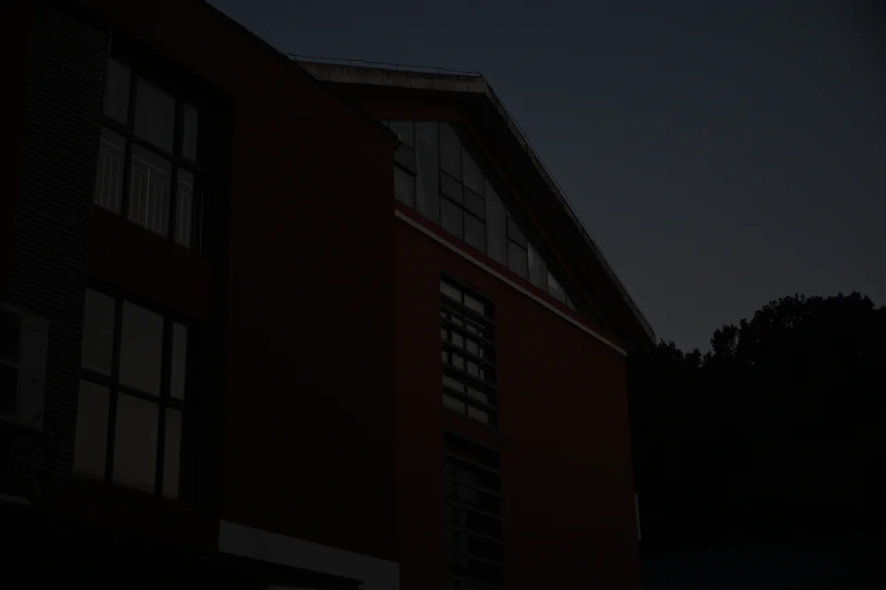
Campus block at dusk. The dark exposure keeps the wall colour but buries the sky and the trees; the bright exposure recovers them and washes the wall out. The result keeps both.
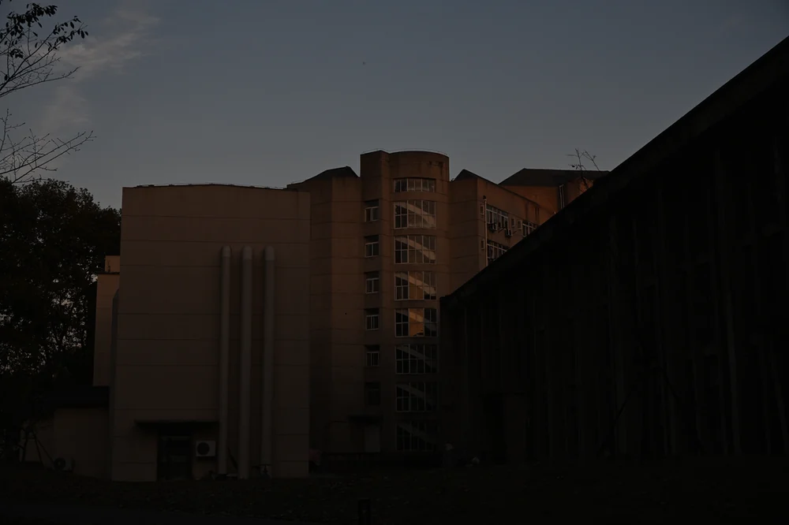
Looking out of a food cart. Near focus holds the boxes and the cart frame, far focus holds the street beyond the glass. The result is sharp at both depths.
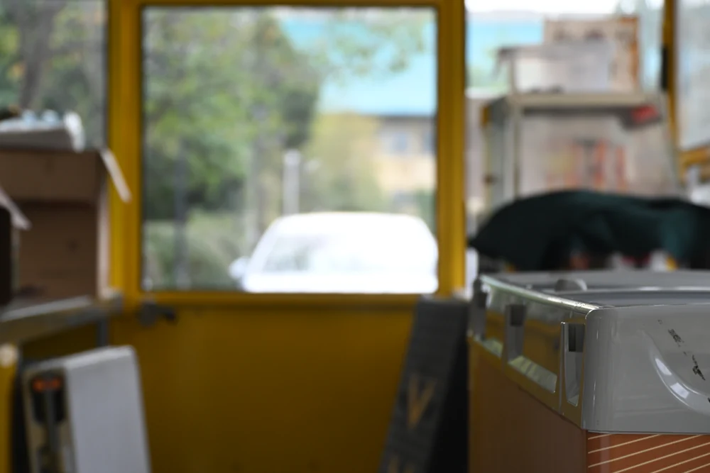
Courtyard. Near focus resolves the figurine, far focus the scooters behind it. The result resolves both.
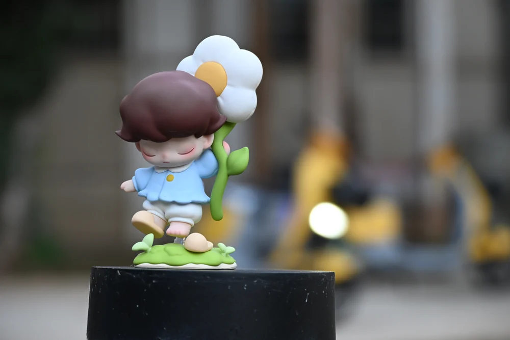
Casement wall. One frame resolves the red frames in the foreground, the other the archway, the railing and the planting beyond. The result resolves both.
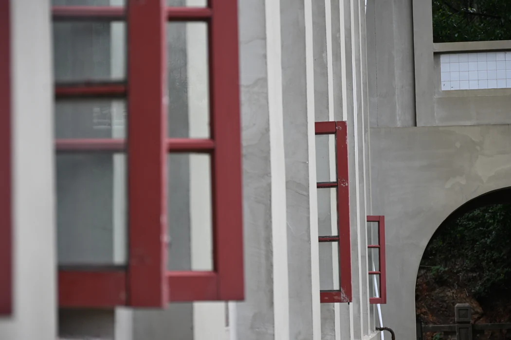
One model, three fusion tasks
Real Scene
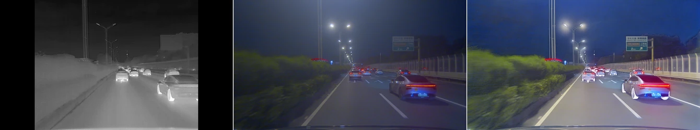
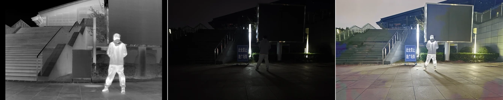
DVTOD
Real UAV
Multi-exposure and multi-focus captures are misaligned as well; the same weights are used, with no task-specific fine-tuning.
Fusion comparison with joint registration–fusion and restoration–fusion
Compared with six joint registration–fusion methods, eight joint restoration–fusion methods, and G2Fusion on Real Scene and DVTOD.
| Method | Venue | Real Scene | DVTOD | ||||||
|---|---|---|---|---|---|---|---|---|---|
| EN ↑ | DeQA ↑ | LIQE ↑ | QualiCLIP ↑ | EN ↑ | DeQA ↑ | LIQE ↑ | QualiCLIP ↑ | ||
| SuperFusion | JAS'22 | 7.119 | 2.764 | 2.222 | 0.541 | 7.232 | 3.080 | 2.589 | 0.525 |
| AU-Net | TIP'25 | 7.018 | 2.742 | 2.091 | 0.506 | 6.979 | 2.825 | 2.266 | 0.471 |
| MulFS-CAP | TPAMI'25 | 6.416 | 2.518 | 1.592 | 0.334 | 6.576 | 2.680 | 2.162 | 0.356 |
| CPMFusion | InfFus'26 | 7.171 | 2.745 | 2.028 | 0.519 | 7.286 | 3.039 | 2.434 | 0.539 |
| FusionRegister | CVPR'26 | 7.108 | 2.637 | 1.703 | 0.435 | 7.228 | 2.923 | 2.178 | 0.547 |
| URMIF | TPAMI'26 | 6.802 | 2.042 | 1.031 | 0.265 | 6.843 | 2.054 | 1.082 | 0.257 |
| Text-IF | CVPR'24 | 7.122 | 2.798 | 2.193 | 0.562 | 7.368 | 3.095 | 2.762 | 0.591 |
| TG-ECNet | ICML'25 | 7.279 | 2.737 | 2.085 | 0.454 | 7.397 | 2.886 | 2.628 | 0.448 |
| PDFuse | NeurIPS'25 | 7.208 | 2.706 | 1.806 | 0.414 | 7.375 | 2.828 | 2.121 | 0.417 |
| OmniFuse | TPAMI'25 | 7.127 | 2.501 | 1.511 | 0.433 | 7.251 | 2.697 | 1.928 | 0.463 |
| DSPFusion | TIP'26 | 7.180 | 2.834 | 2.338 | 0.560 | 7.430 | 2.867 | 2.540 | 0.573 |
| ReCoFuse | CVPR'26 | 7.266 | 2.569 | 1.613 | 0.477 | 7.344 | 2.829 | 2.192 | 0.527 |
| DiTFuse | TPAMI'26 | 6.934 | 2.988 | 2.657 | 0.608 | 7.166 | 3.177 | 3.055 | 0.603 |
| DuS-DiFuse | TPAMI'26 | 7.213 | 2.898 | 2.631 | 0.664 | 7.350 | 3.070 | 3.088 | 0.680 |
| G2Fusion | NeurIPS'26 | 7.100 | 2.421 | 1.578 | 0.353 | 7.218 | 2.627 | 1.853 | 0.382 |
| GenRF (Ours) | — | 7.284 | 3.213 | 3.206 | 0.708 | 7.273 | 3.349 | 3.229 | 0.697 |
Results on MSRS, LLVIP and M3FD
| Method | MSRS | LLVIP | M3FD | |||||||||
|---|---|---|---|---|---|---|---|---|---|---|---|---|
| EN ↑ | DeQA ↑ | LIQE ↑ | QualiCLIP ↑ | EN ↑ | DeQA ↑ | LIQE ↑ | QualiCLIP ↑ | EN ↑ | DeQA ↑ | LIQE ↑ | QualiCLIP ↑ | |
| Text-IF | 7.016 | 2.229 | 1.387 | 0.360 | 7.362 | 2.454 | 2.077 | 0.629 | 6.835 | 2.660 | 2.099 | 0.522 |
| TG-ECNet | 6.325 | 2.083 | 1.319 | 0.266 | 7.288 | 2.628 | 3.171 | 0.427 | 7.116 | 2.595 | 1.661 | 0.425 |
| PDFuse | 6.484 | 1.999 | 1.176 | 0.244 | 7.478 | 2.573 | 2.533 | 0.477 | 6.922 | 2.501 | 1.714 | 0.381 |
| OmniFuse | 6.889 | 2.153 | 1.337 | 0.407 | 7.227 | 2.446 | 2.401 | 0.523 | 6.759 | 2.541 | 1.799 | 0.476 |
| DSPFusion | 7.092 | 2.308 | 1.482 | 0.384 | 7.526 | 2.514 | 3.269 | 0.637 | 6.890 | 2.638 | 2.019 | 0.504 |
| ReCoFuse | 6.999 | 2.156 | 1.357 | 0.420 | 7.327 | 2.842 | 3.033 | 0.626 | 7.100 | 2.507 | 1.649 | 0.552 |
| DiTFuse | 6.414 | 2.157 | 1.702 | 0.362 | 7.123 | 2.644 | 3.154 | 0.671 | 6.873 | 2.427 | 2.056 | 0.559 |
| DuS-DiFuse | 7.152 | 2.367 | 1.919 | 0.511 | 7.370 | 2.539 | 2.237 | 0.717 | 7.186 | 2.511 | 2.237 | 0.612 |
| G2Fusion | 6.539 | 2.156 | 1.470 | 0.362 | 7.251 | 2.389 | 2.062 | 0.451 | 6.706 | 2.347 | 1.567 | 0.396 |
| GenRF (Ours) | 7.321 | 2.397 | 1.754 | 0.560 | 7.363 | 2.847 | 3.385 | 0.761 | 7.388 | 2.757 | 2.268 | 0.585 |
Try it on your own captures
Upload an unregistered pair — infrared–visible, multi-exposure or multi-focus. GenRF returns one fused image in the coordinate frame of the visible image.
Runs on a ZeroGPU Space, so live inference may queue at peak hours. Inputs of different sizes are adjusted automatically.
BibTeX
@article{genrf2026,
title = {GenRF: Generative Registration-free Image Fusion},
author = {Anonymous},
journal = {Under review},
year = {2026},
url = {https://linfeng-tang.github.io/GenRF/},
note = {Demo: https://huggingface.co/spaces/Linfeng-Tang/GenRF}
}
@article{yi2026seerf,
title = {SeeRF: Learning to See Beyond Fields of View via Generative Image Registration and Fusion},
author = {Xunpeng Yi and Yibing Zhang and Qinglong Yan and Yifan Lu and Han Xu and Jiayi Ma},
journal = {arXiv preprint arXiv:2610.35637},
year = {2026}
}